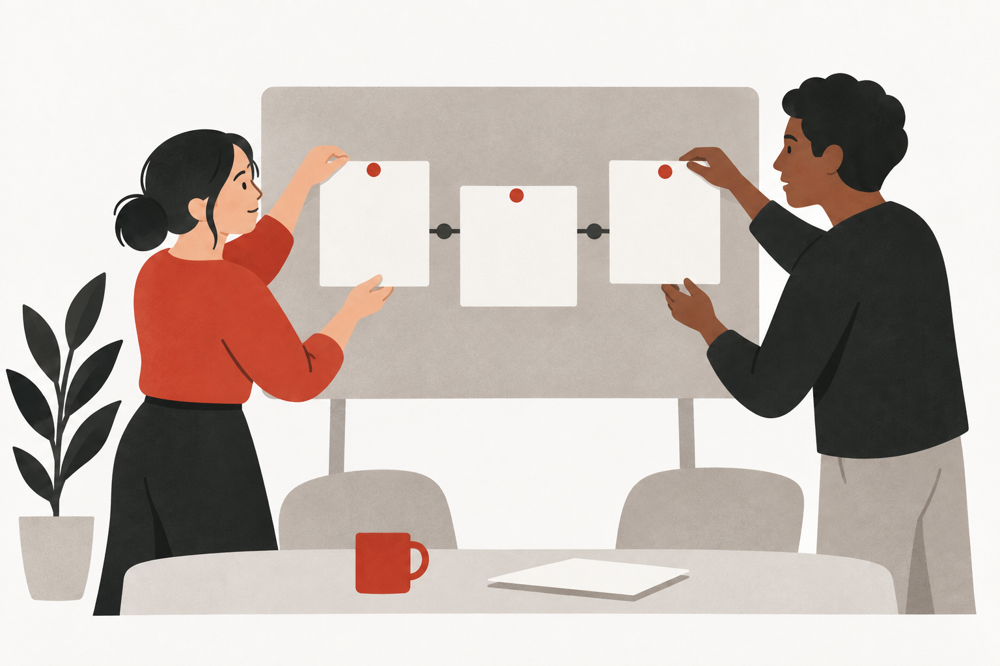
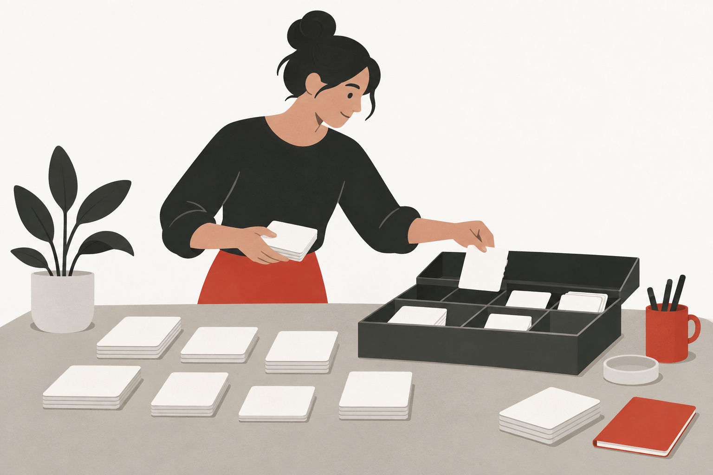

Nestlé / Selected work
End-to-End Product Offering
Connecting employee research with the service journey of discovering and accessing an internal product.

01 / Context & contribution
The work in context
An internal product offering spans more than a catalogue. It includes understanding a need, finding relevant options and navigating the people and processes involved in getting a solution into use.
My focus
My focus was research and service design across that wider journey: understanding different perspectives and turning the evidence into opportunities for a clearer experience.
02 / Approach
How the work was structured
Understand different perspectives
Explore the experience with people involved in requesting, providing and supporting internal products. Include their responsibilities and interactions in the research.
Triangulate the journey
Cluster qualitative evidence into themes and use a survey to examine the emerging needs. Keep different roles visible rather than assuming one journey describes everyone.
Frame service opportunities
Use personas and journey maps to connect user needs with touchpoints and organisational responsibilities. Express opportunities as questions that support joint problem solving.
Support the next decision
Prepare recommendation directions and proposed measures for stakeholder discussion. Separate the research output from subsequent feasibility and implementation decisions.
03 / Design reasoning
What the approach makes possible
A clearer interface can help discovery, but the service also depends on what happens after someone expresses a need. Journey research makes those interactions part of the design conversation.
04 / Outputs & next steps
What the work contributed
- Role-based personas and journey analysis
- Research synthesis across interviews and surveys
- Service opportunity framing
- Recommendations and proposed success measures
Delivery & follow-up
The materials document research, opportunity definition and next steps for stakeholder alignment. They do not establish that all proposed interventions were implemented or that their intended benefits were realised.
This account describes collaborative work through my research and design focus. Internal names, participant information, findings, business measures and source materials are omitted. Process descriptions are rewritten for public presentation.
Explore my research practice